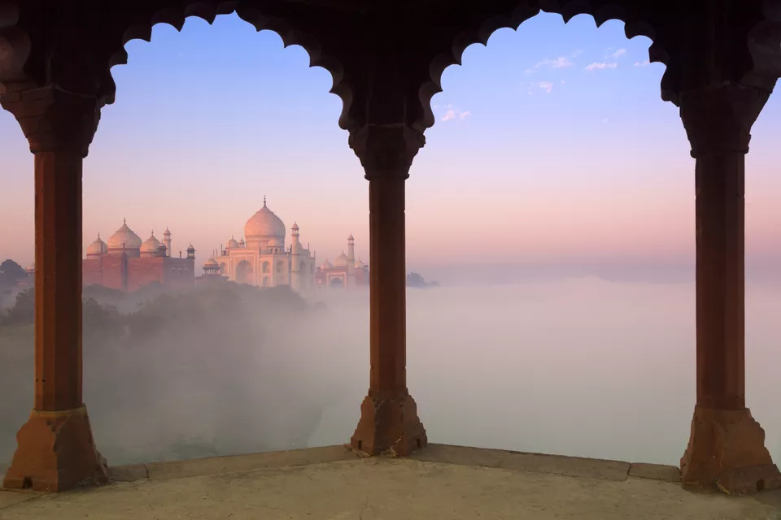
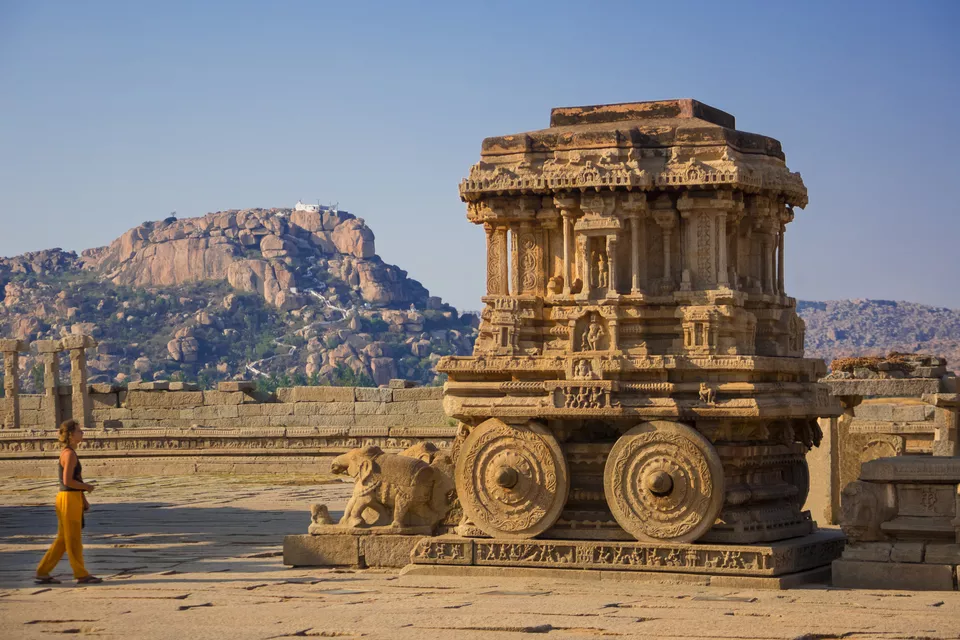
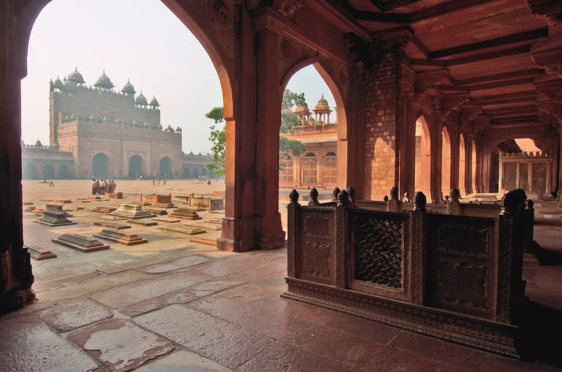
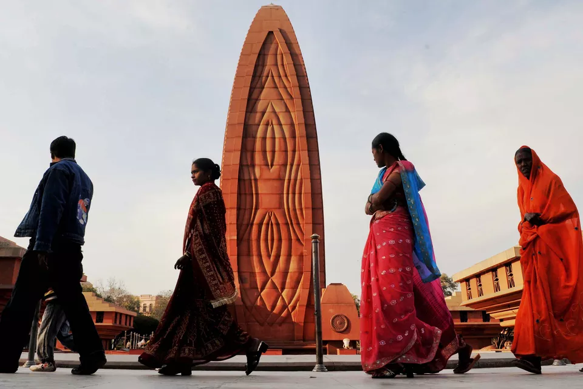
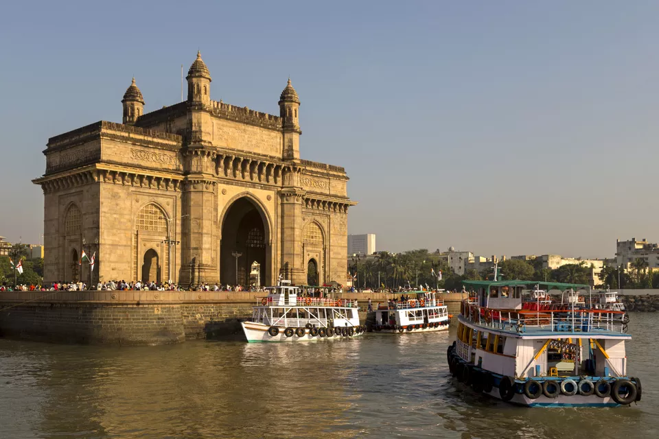
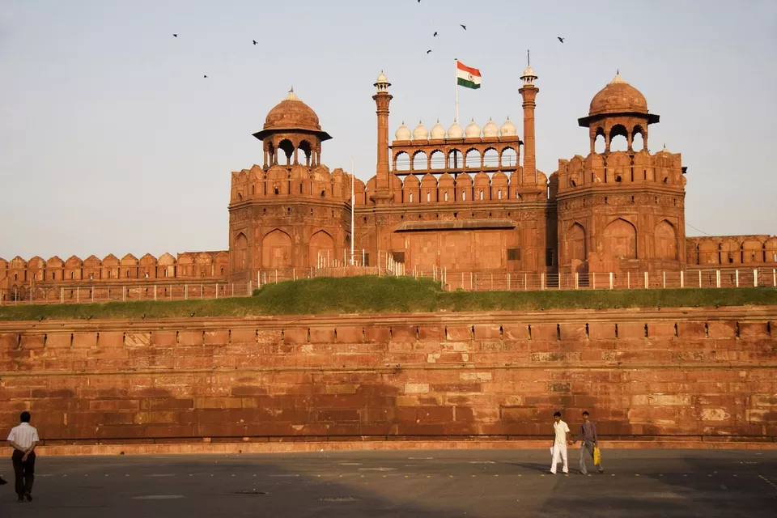
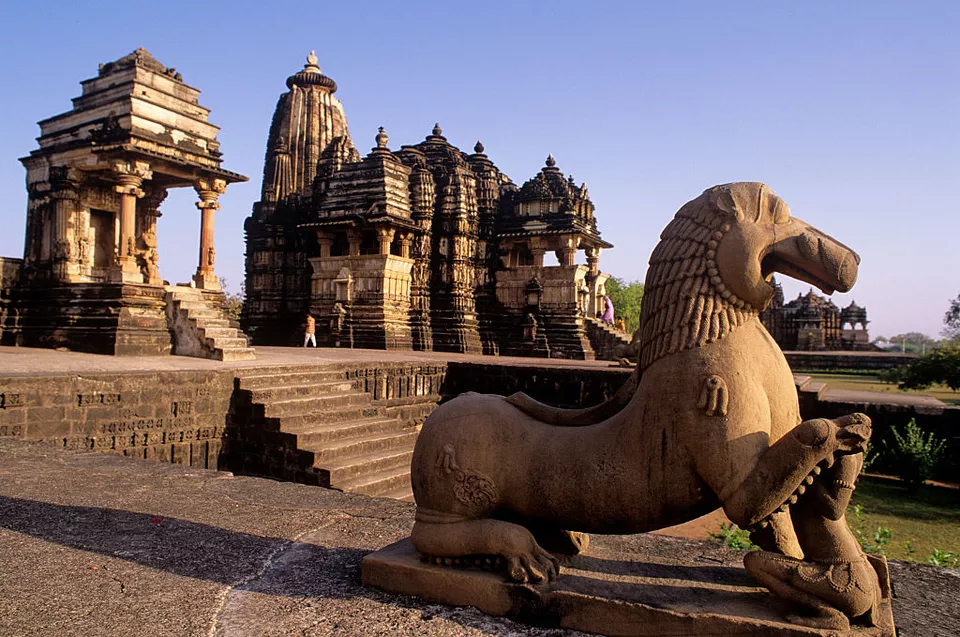
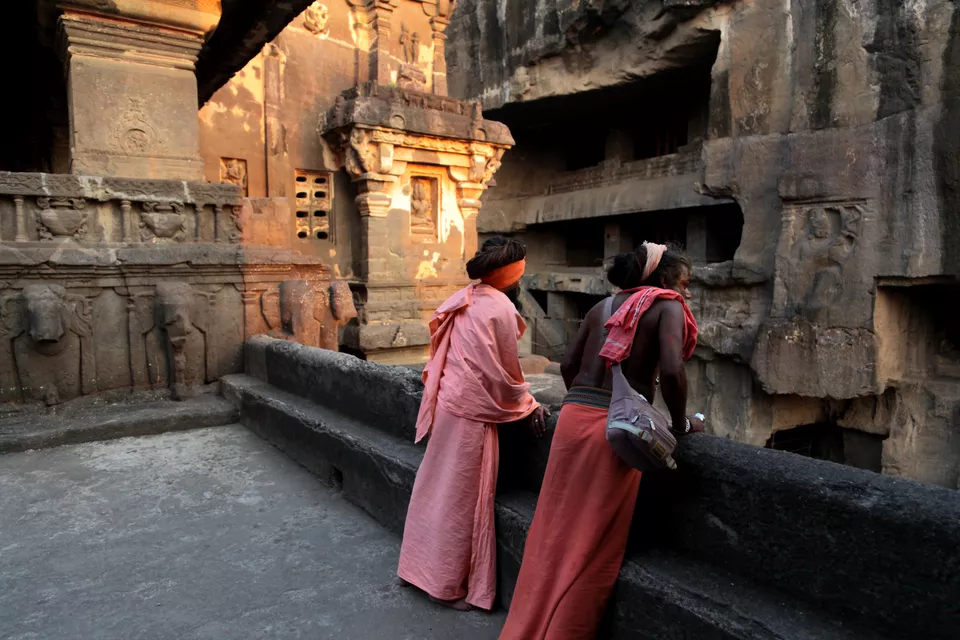
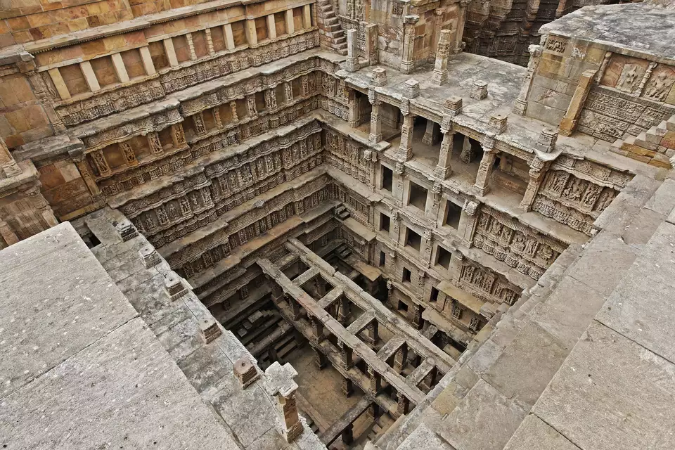
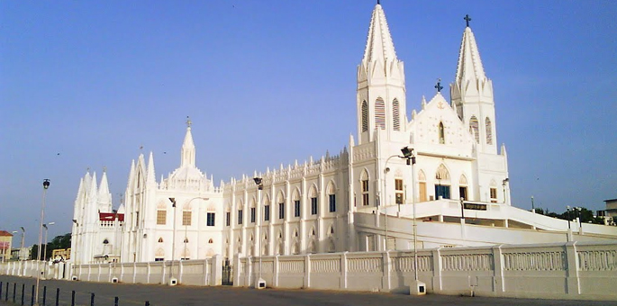

Opulent palaces, ancient forts and majestic structures greet you at every nook and corner of this majestic country. This rich history oozes out of all ancient structures and famous historical monuments in India, and depicts tales of romance, bravery, strength and battles.The bygone era stays entrenched in the society due to these ancient and historical places of India. So if you are a history buff or want a taste of the rich culture of India, head over to explore some of India’s greatest historical monuments of all times!

India is a diverse country steeped in history. Its past has seen a melting pot of different religions, rulers and empires -- all of which have left their mark on the countryside. Many historical places in India are listed as UNESCO World Heritage sites due to their cultural importance.One of the Seven Wonders of the World, the Taj Mahal is undoubtedly India's most famous monument. It looms evocatively from the banks of the Yamuna River. Mughal emperor Shah Jahan had it built as a mausoleum for third wife, Mumtaz Mahal, who died in 1631. Construction took place over 16 years, from 1632 to 1648.The Taj Mahal is made out of white marble but its color captivatingly appears to gradually alter in the changing light of the day.

Now a laid back village in northern Karnataka, Hampi was once the last capital of Vijayanagar, one of the greatest Hindu empires in India’s history. Muslim invaders conquered the city in 1565, wreaking destruction and reducing it to ruins. It was pillaged and then abandoned. Hampi has some captivating ruins, intriguingly intermingled with large boulders that rear up all over the landscape. The ruins date back to the 14th century and stretch for just over 25 kilometers (10 miles). They comprise more than 500 monuments, including magnificent Dravidian temples and palaces. An incredible energy can be felt at this ancient place.

Fatehpur Sikri, near Agra in Uttar Pradesh, was once the proud but short-lived capital of the Mughal Empire in the 16th century. Emperor Akbar founded the city from the twin villages of Fatehpur and Sikri in 1569, as tribute to famous Sufi saint Sheikh Salim Chishti. The saint accurately predicted the birth of Emperor Akbar's much longed for son.Not long after Fatehpur Sikri was completed, it unfortunately had to be abandoned by its occupants as the water supply was insufficient. Nowadays, the city is a deserted ghost town (albeit one that's overrun with beggars and touts) with well-preserved Mughal architecture. Monuments include an imposing entrance gate, one of India's largest mosques, and a palace complex.

Jallianwala Bagh, near the Golden Temple in Amritsar, is the site of a sad but defining moment in India's history and struggle for freedom. On April 13, 1919, British troops opened fire on a large group of more than 10,000 unarmed protesters, in what is known as the Amritsar Massacre.The British didn't give any warning of the shooting. Official records indicate that about 400 people were killed and another 1,200 injured. The unofficial tally is much higher though. Many people died in stampedes and by jumping into a well to escape being shot.The horrific massacre was a turning point in India's relations with the British and a driving factor in Gandhi's movement to seek Independence from British rule.

Mumbai's most recognizable monument, the Gateway of India, occupies a commanding position overlooking the Arabian Sea at the harbor in Colaba. It was built commemorate the visit of King George V and Queen Mary's to the city in 1911. However, it wasn't completed until 1924.The Gateway of India subsequently played an significant part in India's history. The last British troops departed through it in 1948, when India obtained Independence

Neglected and in disrepair in parts, Delhi's Red Fort may not be as impressive as some forts in India but it certainly has a distinguished history.The fort was built as a palace by fifth Mughal Emperor, Shah Jahan, when he shifted his capital from Agra to Delhi in 1638. The capital, known as Shahjahanabad, was where Old Delhi is today. Much of the development took place around Chandni Chowk, the chaotic and crumbling market area adjoining the Red Fort.The Mughals occupied the fort for almost 200 years, until it was lost to the British in 1857. When India obtained Independence on August 15, 1947, the first Prime Minister of India (Jawahar Lal Nehru) unfurled the Indian flag from the fort's ramparts. This practice still continues every Independence Day, when India's Prime Minister hoists the Indian flag and gives a speech there.

If you want proof that the Kama Sutra originated in India, Khajuraho is the place to see. Erotica abounds here with over 20 temples devoted to sexuality and sex. The temples were built mostly between 950 and 1050 by rulers of the Chandela dynasty of Rajputs, which made Khajuraho their first capital. They were hidden for centuries, surrounded by dense jungle, until the British rediscovered them in the early 19th century.The temples are best known for their erotic sculptures. However, more than that, they show a celebration of love, life and worship. They also provide an uninhibited and unusual peek into ancient Hindu faith and Tantric practices.Apparently, the temples were used actively until the end of the 12th century, after which time Khajuraho was attacked and seized by Muslim invaders. The remaining temples are now a UNESCO World Heritage site.

The Ajanta and Ellora caves are astonishingly carved into hillside rock in the middle of nowhere in Maharashtra.There are 34 caves at Ellora, dating back to between the 6th and 11th centuries AD. They're an interesting and notable mix of Buddhist, Hindu, and Jain religions. This comes from their construction at a time when Buddhism was waning in India and Hinduism was starting to reassert itself. Most of the work at Ellora, including the astonishing Kailasa Temple, was overseen by Chalukya and Rashtrakuta kings. Towards the end of building period, local rulers switched their allegiance to the Digambara sect of Jainism.The 30 caves at Ajanta are Buddhist caves that were constructed in two phases, in the 2nd century BC and 6th century AD.While the Ajanta caves are rich in paintings and sculpture, the Ellora caves are renowned for their extraordinary architecture. The most incredible thing about these caves is that they were crafted by hand, with only a hammer and chisel.

A surprisingly recent archaeological find in Patan, Gujarat, Rani ki Vav was flooded by the nearby Saraswati River and silted over until the late 1980s. The step well, which is undoubtedly India's most awe-inspiring, dates back to the 11th century during the reign on the Solanki dynasty. Apparently, the widow of ruler Bhimdev I had it built in his memory.The step well was designed as an inverted temple. Its panels are evocatively covered in more than 500 main sculptures and 1,000 minor ones. Incredibly, no stone is left un-carved!

Located 10 kilometers from Panjim, the historic city of Old Goa was the capital of Portuguese India from the 16th century until the 18th century. It had a substantial population of more than 200,000 people but was abandoned due to the plague. The Portuguese relocated to Panjim, which is known for its Latin Quarter filled with colorful Portuguese homes.Old Goa was actually founded in the 15th century, before the Portuguese, by rulers of the Bijapur Sultanate. After the Portuguese captured it, they constructed many churches. The most notable ones standing today are the Basilica of Bom Jesus (which contains the mortal remains of Saint Francis Xavier), Se Cathedral (the seat of the Archbishop of Goa), and the Church of Saint Francis of Assisi.